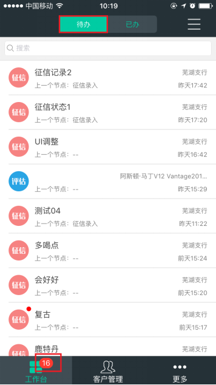
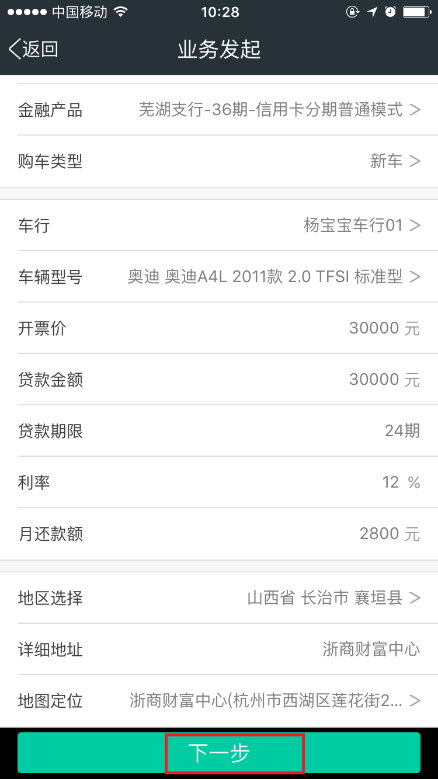
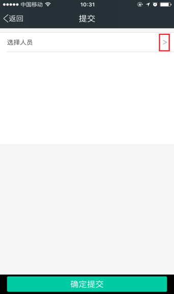
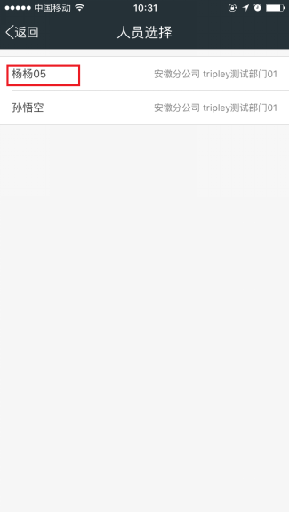
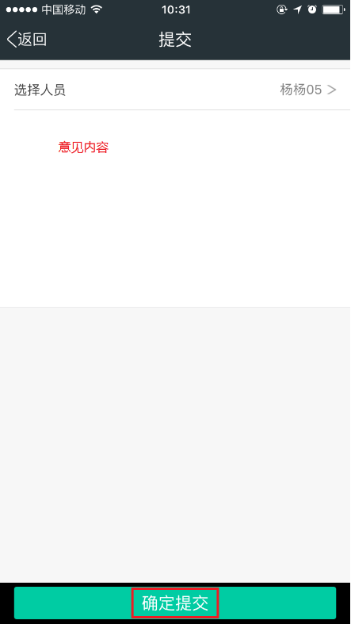
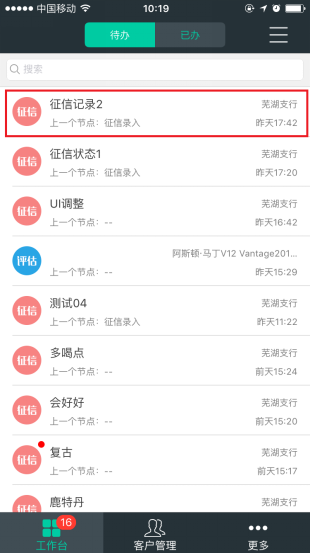
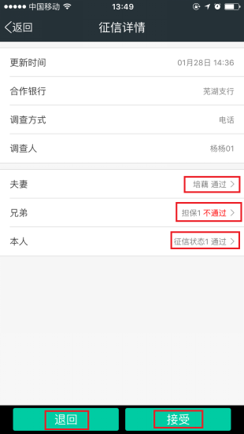
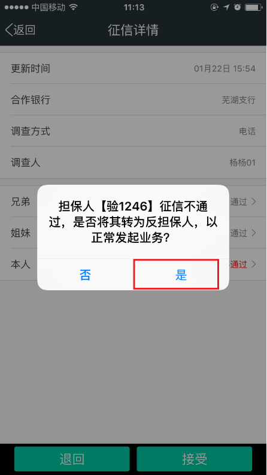

进入工作台，自动默认到【待办】页面，左下角工作台会提示未读取的待办数量，待办页面包含【银行征信】，【贷款审批】，【二手评估】三种流程。

在我的工作台待办页面中，点击要结束待办客户贷款业务列表，进入贷款待办详情页面，可查看客户信息及贷款详情。

信息录入完毕，确定无误点击【下一步】，进入提交页面，点击选择人员，人员选择完毕，填写意见内容，点击确定，提交给业务调度员。



在我的工作台点击【待办】，点击银行征信客户，进入客户征信页面，可查看客户征信详情及担保人征信状态。


【接受】：如客户征信通过，点击【接受】征信流程结束。
【退回】；如客户征信不通过或者存在异议，可点击【退回】，退回给驻行内勤。
*如当借款人担保人之中有征信不通过者，在点击【接受】，可将担保人转为反担保人，以方便正常发起贷款业务。
